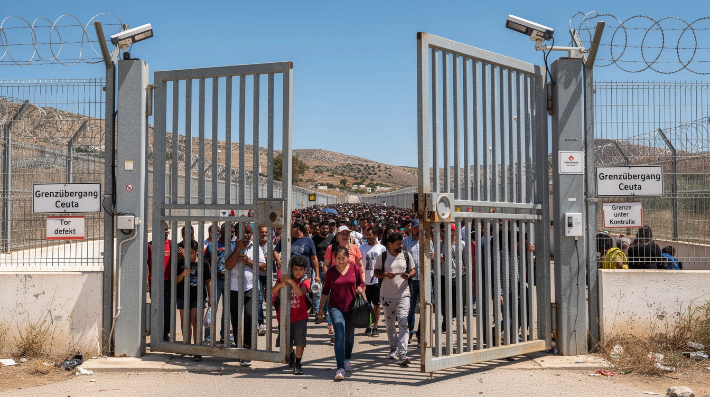

Die Antwort auf den Ansturm

72.000 Menschen überschreiten binnen zwei Tagen die Grenze nach Ceuta. 77 sterben. Die Stadt zählt kaum mehr Einwohner als der Ansturm Menschen.
Die Antwort aus der deutschen Rundfunkblase: neue Wege nach Europa.
Der frühere Deutschlandfunk-EU-Korrespondent Peter Kapern fordert laut einem veröffentlichten Ausschnitt „kontrollierte Wege nach Europa“ für junge Marokkaner.
Am Sonntag gehen in Ceuta zwischen 5.000 und 10.000 Menschen auf die Straße. Christen, Muslime, Juden und Hindus haben gemeinsam aufgerufen. Sie verlangen Personal, Material und Schutz für die Grenze.
Die Stadt fordert eine geschützte Außengrenze. Der Rundfunkmann antwortet mit einem Einwanderungsprogramm.
Wer einen Massenansturm mit neuen Zugangswegen beantwortet, verhindert nicht den nächsten. Er kündigt ihn an.